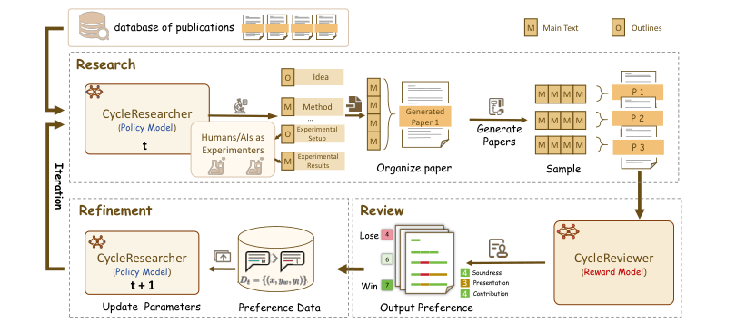
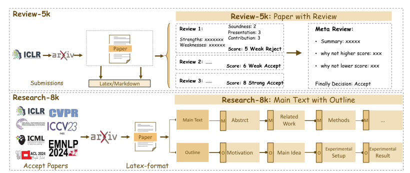
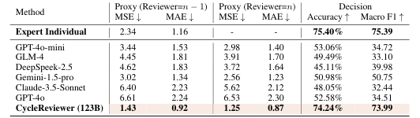
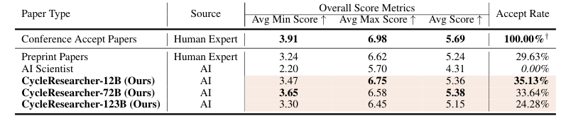
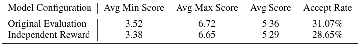
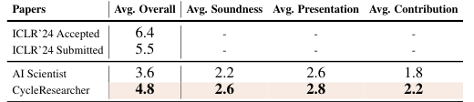
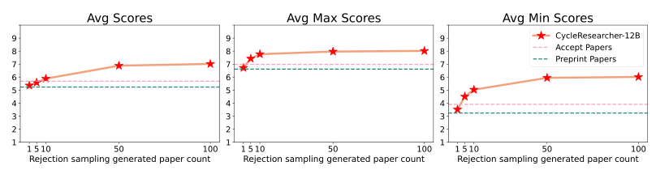
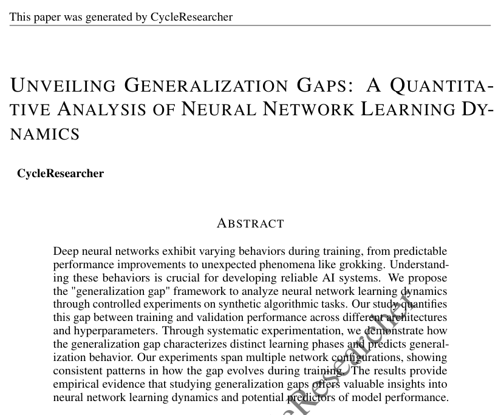
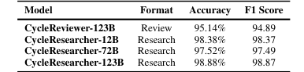
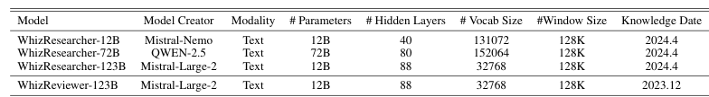

CycleReviewer（reward）
Mistral-Large-2 123B 在 Review-5k（ICLR 2024 真实评审）上 SFT，一次生成多个 reviewer 意见 + meta review。Proxy MAE 0.92，比单个人类评审（1.16）低 26.89%。
把「写论文」建模成 RL 问题：自产 Reviewer 当 reward model，SimPO 迭代优化自产 Researcher——分数确实涨了，但涨的是谁的分数？
一句话：用开源 LLM 训练两个模型——CycleResearcher 读一堆 BibTeX 参考文献直接生成完整论文（含编造的实验结果），CycleReviewer 模仿 ICLR 评审给它打分；再用打分构造偏好对做迭代 SimPO，让"论文"分数一轮轮上涨。AC 的判词：这套自我评价循环（对自产评委优化、再让它当裁判）无法支撑"接近人类 preprint 质量"的声明——初版里连实验结果都是幻觉的论文也拿了高分。本页把方法、证据链裂缝、OpenReview 攻防和代码落差逐层拆开。
整个系统模仿学术界的「投稿—评审—修改」循环，但把三个环节全部内化成模型行为：研究由 policy model 写，评审由 reward model 打，"修改"是参数更新而不是改稿。

Mistral-Large-2 123B 在 Review-5k（ICLR 2024 真实评审）上 SFT，一次生成多个 reviewer 意见 + meta review。Proxy MAE 0.92，比单个人类评审（1.16）低 26.89%。
12B/72B/123B 三档，在 Research-14k（三年顶会接收论文）上 SFT 后做迭代 SimPO。生成论文模拟评审分 5.36，介于人类 preprint（5.24）与 accepted（5.69）之间。
致命依赖：关于 CycleResearcher 的所有主结果都由 CycleReviewer 打分产生——而 policy 恰恰是对这个 reward 直接优化的，且 CycleReviewer 只在人类论文上训过，AI 论文对它是 OOD。论文自己在 Limitations 里承认：训练与推理中生成论文的实验结果全部由模型编造（原文 "Hallucinated"），"为了加速训练，我们要求实验结果是 fabricated 的"。这三点叠加，就是 AC「带保留接收」的全部理由。
这条路线对文献的处理方式是本文最值得记录的设计决策：不做检索、不做实体抽取、不做 idea 图谱——把一个 BibTeX 文件（含每篇引文摘要）整个塞进上下文，「文献 → 研究缺口 → idea」的映射完全交给端到端训练去学。

Research-14k 的每条样本：输入 = 该论文 bib 文件里所有参考文献 + 用 Semantic Scholar API 补齐的摘要（平均 58 篇/文）；输出 = 大纲与正文交替的完整论文（平均 28K tokens）。也就是说模型学的是「给定这批文献，某篇顶会接收论文长什么样」——idea 的新颖性没有任何显式监督，全靠模仿接收论文的分布。
代码确认 推理 prompt（code/ai_researcher/cycle_researcher.py）与 rebuttal 公开的版本一致，名义上是两轮协议：
# system prompt（节选，共 7 步）
1. Analyze the given References.
2. Identify gaps in existing research → motivation
3. Propose a main idea
4. Write Title/Abstract/Intro/Related Work/Methods (LaTeX)
5. Generate experimental setup details in JSON ← 名义上交给实验者执行
6. After receiving experimental results in JSON, analyze them
7. Complete: Results / Discussion / Conclusion
# user prompt = topic + 整个 BibTeX 文件 +
"analyze it and provide the motivation and main idea..."但实现是一轮：generate_paper() 单次调用 vLLM，max_tokens=19000, ignore_eos=True，第 6 步"收到的实验结果 JSON"由模型在同一段输出里自己编出来，解析函数从同一条生成文本中切出 Experimental_Setup 和 Experimental_results 两个 JSON。repo 中不存在注入真实实验结果的第二轮接口。
| 维度 | 检索式 idea agent（ResearchAgent / AI Scientist 等） | CycleResearcher（端到端后训练） |
|---|---|---|
| 文献如何进入系统 | 显式检索/实体链接/引文图扩展，prompt 工程组织上下文 | 用户给定一个 bib 文件（+摘要）整体作为条件，无检索环节 |
| 文献→idea 的映射 | 由 prompt 规则和商业 LLM 的 zero-shot 能力承担 | 由 12k 条「references→接收论文」样本的 SFT + RL 学出，可被梯度优化 |
| 可优化性 | 商业模型冻结，只能改 prompt / 加迭代评审 | 开源权重可训练——这是全文立论的出发点（policy optimization） |
| 产出粒度 | idea / proposal（实验另做或不做） | 一次性输出全文（实验结果编造），28K token 级长文生成 |
| 新颖性来源 | 检索多样性 + 显式 novelty 评审 | 无显式机制；reviewer 分数间接施压（contribution 分项） |
论文声称 这种输入设计带来一个可量化的好处：生成论文平均引用 37.8 篇文献，是 AI Scientist（8.2 篇）的 4.6 倍（Table 7）——因为引文和摘要就在上下文里，"related work" 有真实素材可用。
方法本体不复杂，工程重点全在「长输出偏好优化」上：输出 1–3 万 token 的论文，DPO 的 reference model 开销太大，所以选了免 reference 的 SimPO。
CycleReviewer：Mistral-Large-2 + LoRA-GA，Review-5k 上 12 epochs，学会「从最低分 reviewer 到最高分 reviewer 依次生成，再出 meta review」。CycleResearcher：12B 训 32K 上下文 / 72B、123B 只有 24K（截断），batch 2×8，lr 4e-5，12,000 步。
另取 4,152 篇 arXiv 新论文，只保留 references 作输入；温度 0.4 采样 3 篇论文 M₁..M₃ → CycleReviewer 打分取平均 rᵢ → 最高分为 y_w、最低分为 y_l，得偏好数据 D_t。
每轮只用全集 1/3（防过拟合），lr 5e-7，RL 阶段 12B 文本长 18K / 72B、123B 仅 10K。P_t → P_{t+1} 后重新采样，形成近似 online 的迭代（模型逐轮适应"评委口味"）。
NLL 项是稳定器：消融显示去掉它平均分 5.36→4.91、接受率 35%→12%，长文生成会出现重复和崩坏——比去掉整个 RL（→5.12）伤害还大。去掉迭代（只做一轮 SimPO）只掉 0.15 分，说明迭代的边际收益其实很小，大头来自第一轮偏好优化。
循环里没有任何一步是"根据评审意见修改这篇论文"——反馈只以偏好对形式进入梯度。Reviewer GAvj 专门批评了这个误导性用词，作者在 rebuttal 中把 revision 改成了 refinement。理解这点才能看清：这是标准的 RLHF 式对齐流程套在论文生成上，不是 agent 式的评审-修改循环。
论文声称 伦理配套：Fast-DetectGPT（Llama-3-8B 打分模型）检测生成文本、输出带"水印"声明、下载权重需登记机构与用途的许可制度、开源前过 SafetyLock 红队。落实程度见第六节审计。
论文的论证是一条两段式链条：先证明 CycleReviewer 打分准（对齐人类），再用它给 CycleResearcher 发成绩单。两段各有一条裂缝，叠加后主结论被 AC 判定为未被支撑。


这张表就是摘要里"接近 preprint 水平"声明的全部来源。它的效度取决于两点：CycleReviewer 对 AI 论文打分是否有效（OOD 问题），以及 policy 是否只是学会了讨好这个特定评委（reward hacking）。两条质疑各有一个实验回应，都只能算部分挡住：



裂缝的总和（AC meta review 的逻辑）：①评委只见过人类论文，AI 论文是 OOD；②选手直接对评委优化，得分高不足为奇；③初版论文里实验结果全是幻觉仍拿高分——人类评审隐含"作者真做了实验"的信任前提，自动评审没有任何机制验证这一点。三条合起来：高分论文 ≠ 好研究，本文真正证明的是"可以批量生成在自动评审指标上得高分、但结果未必正确的论文"。AC 明确建议按这个 framing 重写，并"敦促作者慎重考虑公开模型的伦理问题"。
四位评审最终全部非负分，但过程是一场关于「这项工作对社区是正资产还是负资产」的辩论。AC 的 meta review 没有跟着评分走，而是逐条复核了方法论，最后写下 "recommend acceptance but with reservations"。
担心 policy 钻 reward 空子、只做 ML 领域。作者回应：隔离 reward model 实验（Δ0.14）+ 人类评估。
"n−1 均分当真值"不成立：评审分歧是功能不是噪声，输出中间分即可刷 MAE，且只看分数不看评审内容。作者以 proxy 指标推导+分布分析+削减声明回应；CzSX "in good faith" 接受，但特别叮嘱许可监管要真落实——"低质量科研内容的泛滥对学术界是可怕结局"。
"幻觉出实验结果再为其写论文"不为科学贡献真知识，是 dual-use 甚至恶意技术，"当前形态下论文很可能是 net-negative"；建议重新 framing 为"向社区报警：评审系统即将失灵"。引 Gao et al. 要求 held-out reward 检验。作者补了端到端流水线（附录 H）+ 独立 reward 实验后，GAvj 提分。
指出附录样例论文"明显幻觉与不实（声称超 SOTA 却无证据）"；12B 比 72B/123B 分高反直觉——作者解释为上下文长度差异（12B 训 32K/RL 18K，大模型只有 24K/10K），并称扩数据后 72B 反超（5.38）。
为什么最后还是收了：AC 认可问题本身重要、数据集有价值、作者响应认真（削减声明、补实验、改用词），且四位评审都愿意给正分。但 meta review 把接收条件说得很清楚——结论只能按"高分可以被生成出来"来读，而不是"AI 能写出 preprint 质量的论文"。这份 meta review 本身就是对 LLM-judge 评价范式的一页判例。
审计对象：code/（clone 自 zhu-minjun/Researcher，commit 8c1b253，2026-03-05）。repo 现在是三合一生态（CycleResearcher / CycleReviewer / DeepReviewer），其中 OpenScholar/ 与 evaluate/ 属于后续论文 DeepReviewer 的组件，与本文无关。真正对应本论文的代码不到 700 行。
code/
├── ai_researcher/
│ ├── cycle_researcher.py # 推理壳：vLLM 加载 HF 权重 + 上文 system prompt（118 行）
│ ├── cycle_reviewer.py # 推理壳：固定 prompt "fill out 4 review opinions"（132 行）
│ ├── utils.py # 字符串切分式解析（'## Motivation'、'### Rating'…）
│ ├── detector.py + detect/ # Fast-DetectGPT 完整实现（Bao 原版 MIT 代码，~1200 行）
│ └── deep_reviewer.py # 后续工作 DeepReviewer
├── Tutorial/ # 1-3 号 notebook；readme 链接的 tutorial_4 不存在
├── OpenScholar/, evaluate/ # DeepReviewer 的检索与评测组件
└── LICENSE.md # CycleResearcher-License 全文
# 没有的东西：SFT 脚本、SimPO/偏好对构造、迭代训练循环、
# 数据集构造流水线、o1 实验执行、水印、SafetyLock| 论文声明 | repo 中的实际情况 | 核对 |
|---|---|---|
| SFT→迭代 SimPO 训练框架（全文方法核心） | 无任何训练代码。仅 detect/get_score.py 里残留硬编码路径 'simpo_large_300_merge_latex_review'，证明内部存在 SimPO 产物但未发布 | 缺失 |
| 两轮输入输出（references→设计；结果 JSON→成文） | prompt 写了两轮协议，实现是一轮连续生成（ignore_eos=True），实验结果由模型当场编造后被同一解析器切出 | 名实不符 |
| 附录 H：o1 执行真实实验的端到端流水线（rebuttal 承诺 MIT 开源） | 不存在。无实验执行、无 AI Scientist 集成；readme 里 "Tutorial 4: End-to-End Research Workflow" 链接指向不存在的文件 | 缺失 |
| Fast-DetectGPT 检测工具（95–99% Acc） | 真实存在且完整：条件概率曲率 + llama-8B-ref.json 预置参考分布，AIDetector 一行可用。伦理措施中唯一足额兑现的一项 | 代码确认 |
| "所有输出嵌入水印" | 无任何水印代码。所谓水印只是样例 PDF 页面上的可见文字（页眉 "This paper was generated by CycleResearcher" + 斜排底纹），编辑 LaTeX 即可移除 | 名实不符 |
| 许可制度：登记机构/用途，出版商可查询访问记录 | LICENSE.md 确有条款；HF 仓库为 gated: auto——填表即自动放行，无人工审核；"出版商查询"无任何系统实现，只是承诺 | 形同虚设 |
| SafetyLock 红队加固后才开源 | repo 无相关代码（SafetyLock 是作者另一篇论文），无法核验权重是否处理过 | 不可核验 |
| 推理超参（温度 0.4 采样） | researcher 与 reviewer 推理温度均为 0.4，与论文一致 | 代码确认 |


review.split('## Rating\n\n')[1].split('##')[0][0]——若模型给出满分 "10"，会被解析成 1.0。评分范围 1–10 下这是真实可触发的 bug。'## Motivation'、'### Strengths' 等标记字符串切分，7B 与 123B 两套格式互为 fallback，任何一处失配整条静默返回 None（裸 except 吞错）。
在自动化科研的谱系里，CycleResearcher 是「端到端可训练」路线的代表作：它证明了开源模型 + 偏好优化能稳定生成形态上接近顶会论文的长文本，也用自己当反面教材演示了这条路线的评价危机。
Review-5k / Research-14k 两个数据集（HF 可下载，auto-gated）；「references 作条件 + 大纲/正文交替」的长文 SFT 配方；SimPO+NLL 在 28K token 级输出上可行的工程证据。
Fig. 3 的 best-of-N 曲线 + 自动 5.36 vs 人类 4.8 的落差 + 初版幻觉高分事件，构成一条完整的 reward hacking / LLM-judge OOD 失效证据链，比任何综述里的抽象警告都具体。
「文献→idea 交给端到端训练」换来了可优化性与引用密度，代价是 idea 生成过程完全黑箱、新颖性无显式机制——与检索式路线（可解释、不可训练）恰成互补的两极。
不要把 5.36 读作"AI 论文接近人类 preprint 质量"，要读作"存在一类论文：自动评审给高分、人类专家不买账、实验结果未必真实——而且它们可以被批量生产"。GAvj 的 reframing 建议至今适用：这项工作最大的公共价值，是提前演示了投稿系统在生成模型时代将面临什么。凡是「用 LLM judge 当 reward / 评估器」的系统（包括我们自己的），都应该用本文的三连问自检：评委见过这种分布吗？选手对评委优化过吗？评委能验证内容真伪吗？
后续脉络：该团队沿"评审侧"继续推进——DeepReviewer（2025，加入多视角模拟与自校验）、DeepReviewer-v2 与 deepscientist.cc 在线平台（2026），repo 已演化为三合一生态。本文的 CycleResearcher 生成侧此后未见训练代码或流水线开源。